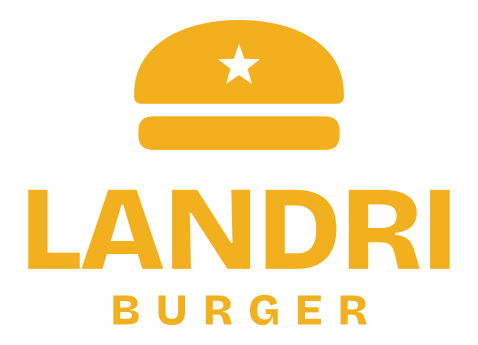
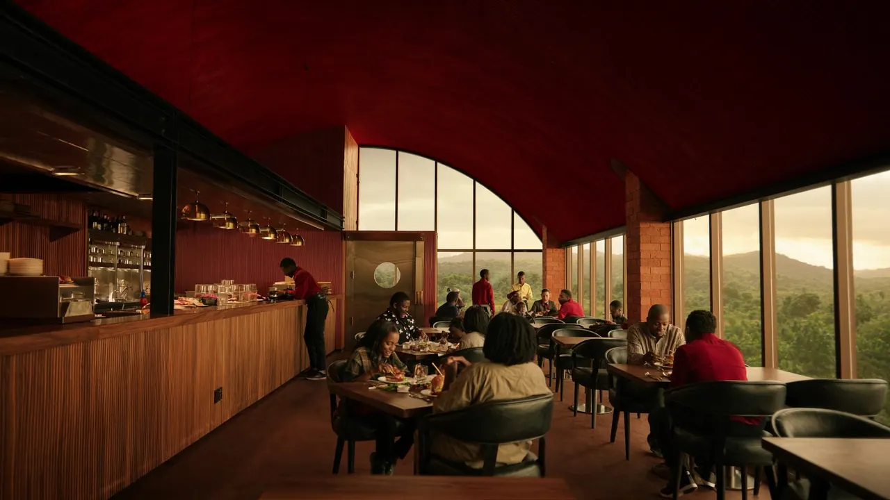
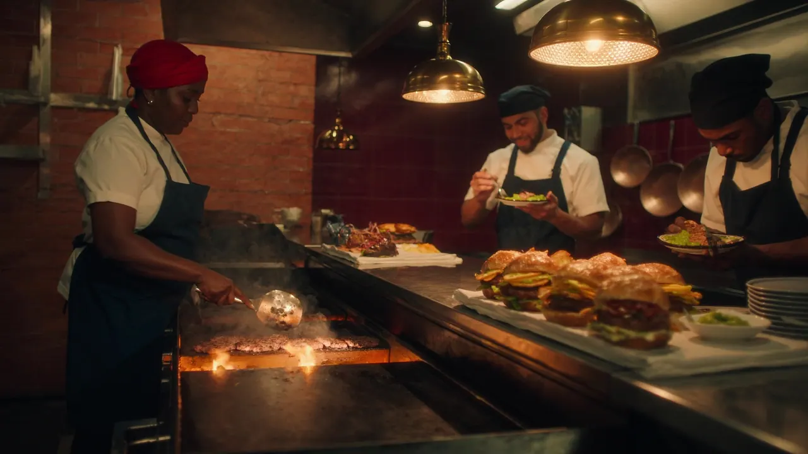
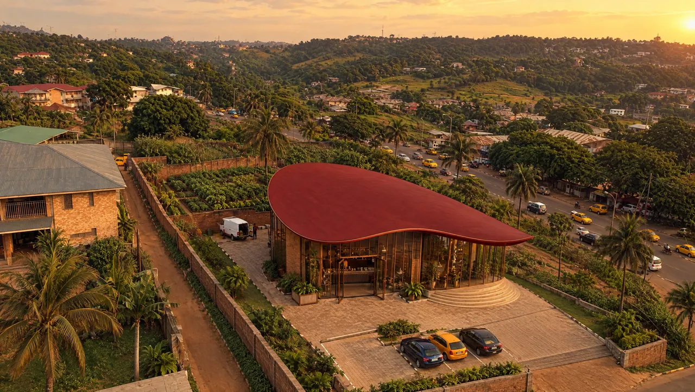

Planche de style
Landri Burger
Burgers haut de gamme à Yaoundé. L'énergie d'un grand fast-food, le soin d'une table raffinée, les saveurs du Cameroun. Tokens identiques à assets/css/site.css.
Logo

Couleurs
Typographie
Saisi à la minute.
Texte courant : Hanken Grotesk. Bœuf saisi à la flamme, plantain mûr, poivre blanc de Penja. Une maison du burger haut de gamme, pensée pour le Mboa.
Boutons et liens
Composant : plat
Le Landri
Le plus demandé6 500 FCFADouble steak de bœuf écrasé, cheddar affiné, oignons confits, plantain mûr frit, sauce au poivre blanc de Penja.
Composant : service
À emporter
Commandez au comptoir, repartez vite.
Sur place
En salle ou en terrasse, service à table.
Direction photo (Higgsfield)



Heure dorée, lumière chaude au tungstène à l'intérieur, objectif 24 à 28 mm, grain cinéma léger. Équipe et clientèle camerounaises, vêtements sans marque. Matières : brique terre cuite, verre cadré de bronze, toit laqué rouge, laiton. Jamais de texte ni de logo dans l'image.